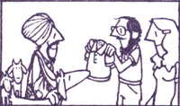

In issue 37, Bill Wodraska shared some of his thoughts regarding one of humankind's better ideas-barter-and offered up an interesting suggestion: "I'd like to see a continuing feature on barter and skill-and-labor exchanges," said Bill. "Maybe MOTHER could even swap subscriptions for contributions to the department." "You're on!" we replied . .. and announced our stillstanding offer. Anyone (and that means you!) who sends us a short (about 300 words) account of an actual barter that's good enough to print will receive-as the folks on the following page have-a twelve-month subscription (or extension of same) to THE Mother Earth News (restricted) .
The Mother Earth News (restricted) , Inc., P.O. Box 70, Hendersonville, N.C. 28791
My wife and I live in Kathmandu, Nepal . . . and, although our home is a bit removed from MOTHER'S base in the rolling green hills of western North Carolina, we've discovered that the tradition of trading is alive and well . . . even here in the Himalayas'. During our threeyear stay we've been involved in a variety of swaps . . . but the following story describes my favorite deal.
As our plans to return to the States within the next year were materializing, my wife-who is a Nepalese citizen-became concerned that she had no salable skill to use in her home-to-be. So when a secretary at my office mentioned that she wanted to learn Nepali, I didn't wait a minute before suggesting my wife as a language instructor . . . and proposed that-in exchange for the lessons-the typist could teach my lady some clerical skills.
Now-a few short months later-my wife is happily (and swiftly) clattering away on the typewriter . . . with dreams of setting up a home typing business!
E.R.
Kathmandu, Nepal
When MOTHER first introduced me to the idea of barter, I wondered how I-a busy mother and science teacher-could find opportunities to swap my skills. Well, time itself turned out to be the key to my trading career!
What I lacked most, you see, were free evenings to spend with my husband and our son during the winter months, when teaching commitments took up the lion's share of my days and nights. And when I considered the number of other people (farmers and construction workers, for instance) who have unequal workloads which-like mine-tend to keep them extremely busy at one time of year and leave them practically idle at another, I realized that I had the perfect swap!
So-a little nervous at first-I called a farmer friend and proposed a trade of time. The woman snapped my offer up, and now, during the summer months when she's overloaded with work (and I'm on vacation), I do the grocery shopping for both of our families. Then in the winter, when my teaching load is heaviest, she shoulders the errands.
Our arrangement has not only saved us time, but produced an added benefit: Since we pool coupons and stick strictly to the lists (something I could never do when I did the marketing for just our household) that we prepare for each other, we've both managed to reduce our weekly bills! In fact, this "shop swap" has been so successful that-as we get ready to repeat our trading cycle this year-our families are planning to share other chores, as well!
C.K.L.
Illinois
As true believers in the beauty of barter, my husband Danny and I took a small suitcase of swappable "extras" along with us when we went to spend four months in Goa (a territory nestled against the Arabian Sea on India's spectacular southwestern coast).
Surprisingly enough, it turned out that the most popular trading items from our stash of imported goods were Banion shirts. We exchanged one of the garments for a daily supply of fresh eggs from a nearby farm . . . a second shirt brought us 20 coconuts, . . . and yet another of the wearables was used as half the price of a milk goat!
Moreover, our table often boasted a fresh-from-the-sea dinner, once we discovered that the local fisherfolk would gladly share a portion of their catch in return for help in pushing the heavy boats up onto the shore at dusk.
In fact, during our sojourn in Goa, barter came to be pretty much our sole means of "buying", since cash was always a rare commodity in the local marketplace. We soon became accustomed to trading for all of our household items . . . and every exchange was marked by a sense of fairness, and by the pleasure that both parties gained from practicing this "living art".
Now that we're back in the States, we find that-as the American dollar becomes increasingly inflated-our family depends more and more on the "trading education" we received in Goa. Here in Oklahoma we've fed the property owner's cows in exchange for rent and electricity in our cottage, and traded our carpentry skills for the local physician's attendance at the homebirths of our three children.
You can be sure we'll continue trading wherever we go!
C.S.
Oklahoma,
When I built an add-on greenhouse in the fall of 1979 (to help heat my dwelling and to accommodate the houseplants that were beginning to take over all of the free corners and countertops in my home), I had no idea that I was providing the basis for some serious swapping!
For years, you see, I've tried to grow outdoor gardens, and each spring-despite the fact that I'm an avid botanist by trade and a hothouse fanatic in my spare time-I've had to watch weeds get the better part of my growing space.
My solution to this seeming lack of outdoor green-thumbery was to use my growing shed to start plants for my successful gardening friends . . . in exchange for a share of their harvests.
The swap has worked out well for everyone involved: Since the growing season up here in the Green Mountain State is always shorter than folks count on (and sometimes even shorter than that!), my neighbors have the advantage of well-started shoots for early spring plantings, and I-in turn-reap a constant supply of fresh vegetables . . . and have enough surplus to stow away a winter's worth of canned and frozen goods.
In fact, I'm so pleased by the "fruits" of barter that I've already planned the starts I'll provide for this year's spring and fall crops . . . and I'm already handing out the young vegetables that I planted in February!
L.J.
Vermont
Spring has finally shaken off the chill left by of Man Winter up here in the Ad irondacks . . . and, along with the return of birds to the North Country, travelers from warmer climes are beginning to visit our area again. Well, a gathering of folks-in this neck of the woods, at least -is bound to bring about a swap or two
. . . and, so far, this season's reunions have produced some first-rate trades!
For instance, for some time I've been hankerin' to put, a barbecue in the space between our house and the barn . . . but, being a professional builder and stonemason, I knew that the design I had In mind would require at least a month of hard labor for alone worker. And so-especially in light of the long list of essential jobs that still had to be done around our farm this spring-up until about eight days ago the prospect of roasting pork out back in the near future looked pretty grim.
In fact, I had just about resigned myself to yet another summer of going to other folks' homes for a bite of barbecue ... when some friends arrived from South Carolina. They soon got to talking about their plans for homesteading . . . which included building a rock house (despite the fact that the couple's only experience in stonework amounted to skipping slate across a pond!). It wasn't long before we struck up a bargain: my stonefashioning know-how for their help in building the barbecue.
Now-a little over a week later-I have my long-drearned-of outdoor grill, and my southbound buddies are more-than-novice stonemasons!
T.M.
New York
|
 |
|
|